① 16-1 政府的職能與四大經濟角色
📌 看不見的手 vs 看得見的手：
• 古典學派亞當斯密（Adam Smith）：主張自由放任，信賴市場機能（價格機能）這隻「看不見的手（An Invisible Hand）」來引導資源配置；政府僅扮演「消極夜警國家」角色（維持治安、國防、司法與基本教育）。
• 現代混合經濟體系：現實中市場機能往往會失靈，造成環境污染、貧富懸殊、經濟大蕭條。此時政府必須伸出「看得見的手（A Visible Hand）」進行適度干預，扮演市場失靈消除者與繁榮守護者的關鍵角色！
• 古典學派亞當斯密（Adam Smith）：主張自由放任，信賴市場機能（價格機能）這隻「看不見的手（An Invisible Hand）」來引導資源配置；政府僅扮演「消極夜警國家」角色（維持治安、國防、司法與基本教育）。
• 現代混合經濟體系：現實中市場機能往往會失靈，造成環境污染、貧富懸殊、經濟大蕭條。此時政府必須伸出「看得見的手（A Visible Hand）」進行適度干預，扮演市場失靈消除者與繁榮守護者的關鍵角色！
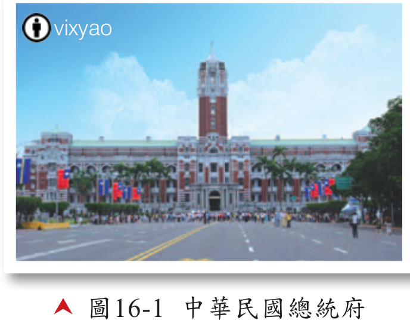
▲ 圖 16-1 中華民國總統府（中央政府機關與五院共同承擔國家治理職能）
一、政府四大經濟角色與任務
- 制定法律與標準，保障人民權利：建立法規架構（如《民法》、《公平交易法》、《消費者保護法》），確立私有產權與合約履行機制。
- 維護經濟公平，縮小貧富差距：實施綜合所得稅累進稅率、低收入戶急難救助、身障福利與老農津貼，落實財富二次分配。
- 維持經濟穩定，促進充分就業：景氣蕭條失業率攀升時擴大公共支出降息；景氣過熱物價飆漲時緊縮支出升息。
- 消除市場失靈，提升經濟效率：介入自然獨占產業、提供公共建設、管制污染外部成本。
② 16-2 市場失靈四大成因與政府對策
市場失靈（Market Failure）是指市場價格機能無法充分發揮有效配置經濟資源的功能，導致社會總福利受損。課本歸納四大主要成因與政府對策：
| 市場失靈成因 | 經濟機制與失靈現象 | 課本實務生活範例 | 政府對策與因應手段 |
|---|---|---|---|
| 1. 自然獨占（Natural Monopoly） | 初期固定成本與設備極其龐大，隨產量增加平均成本（AC）持續下降（規模經濟顯著）。若任由私人競爭會造成重複投資浪費，私人獨占則會抬高價格剝削消費者。 | 自來水供應（台水）、電網傳輸（台電）、鐵路軌道系統（台鐵、高鐵）。 | • 政府經營公營事業（如台水、台電）。 • 透過法規進行價格管制（平均成本定價法、邊際成本定價法）。 • 採用 BOT 模式（興建-營運-移轉）。 |
| 2. 資訊不對稱（Information Asymmetry） | 交易雙方掌握之資訊不對等（我知你不知）。導致： • 事前「逆選擇（Adverse Selection）」：優質品退出市場（二手車檸檬市場、帶病投保）。 • 事後「道德危險（Moral Hazard）」：投保後疏於防範、員工偷懶摸魚。 |
中古車買賣、中古屋漏水爭議、人壽保險投保。 | • 訂定資訊揭露法規（食品成分標示、中古屋屋況說明書）。 • 規定定型化契約規範鑑賞期。 • 建立專業證照檢驗制度（醫師、會計師執照）。 |
| 3. 正的外部性（外部利益） | 經濟行為對他人帶來正面效益，他人卻不必付費。私人利益 ＜ 社會利益，導致市場均衡產出不足（小於社會最適量）。 | 家長帶幼兒接種麻疹疫苗、農民造林綠化、企業投入研發新科技。 | • 給予補貼（疫苗公費補助、育兒津貼）。 • 租稅減免（企業研發投資抵減）。 • 專利權保護（保障研發成果）。 |
| 4. 負的外部性（外部成本） | 經濟行為對他人造成損害，行為人卻不必承擔代價。私人成本 ＜ 社會成本（社會成本 ＝ 私人成本 ＋ 外部成本），導致市場過度生產（大於社會最適量）。 | 石化廠排廢氣廢水、重機夜間噪音炸街、二手菸害。 | • 課徵皮古稅（Pigovian Tax）（空污稅、碳費、隨袋徵收垃圾費）。 • 法令直接管制與開罰（環保標準罰鍰）。 • 界定產權（寇斯定理）。 |
💡 統測名師避坑指引：
• 外部利益 ➔ 市場生產不足 ➔ 政府應補貼。
• 外部成本 ➔ 市場生產過剩 ➔ 政府應課稅或處罰。
• 外部利益 ➔ 市場生產不足 ➔ 政府應補貼。
• 外部成本 ➔ 市場生產過剩 ➔ 政府應課稅或處罰。
③ 16-3 財貨四大分類矩陣與公共財特性（統測絕對必考）
財貨的分類取決於兩大核心維度：「獨享性 vs 共享性（敵對性）」以及「可排他性 vs 不可排他性」。
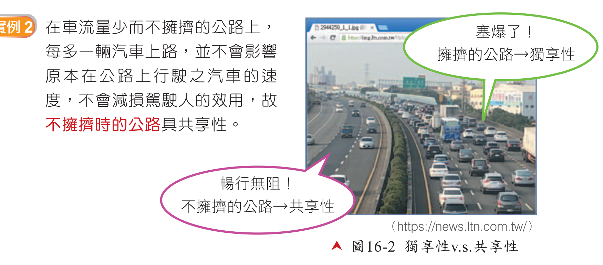
▲ 圖 16-2 獨享性（車多擁擠減損他人效用）vs 共享性（車流量少時多一輛車不影響他人速度與效用）
一、統測黃金考點：私有財與公共財判斷矩陣（課本圖 16-7）
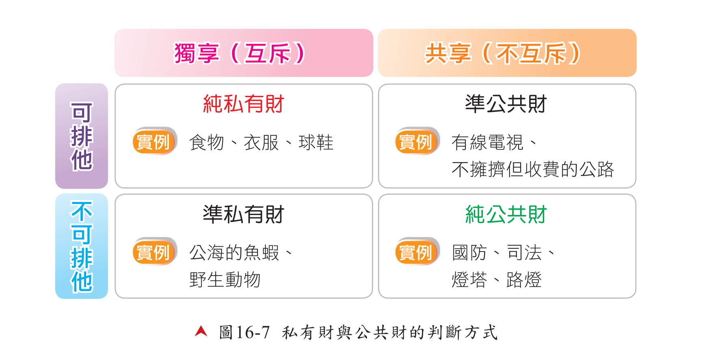
▲ 圖 16-7 財貨的四大分類矩陣（依「排他性」與「敵對性/獨享性」兩大維度劃分）
| 分類項目 | 獨享性（互斥性 / 敵對性） 一人享用會減少他人享用額度 |
共享性（非互斥性 / 非敵對性） 一人享用不影響他人享用效用 |
|---|---|---|
| 可排他性 可透過收費阻絕未付費者 |
① 純私有財（Pure Private Goods）
• 具獨享性、具可排他性• 課本實例：便當、衣服、球鞋、手機、個人自用車 • 特性：市場機制運作最有效率，付費購買才能獨自享有。 |
② 準公共財（俱樂部財 Club Goods）
• 具共享性、具可排他性• 課本實例：有線電視第四台、收費游泳池、不擁擠但收費的國道高速公路 • 特性：未付費可拉線阻絕，付費後可多人同時共享。 |
| 不可排他性 無法收費或收費成本太高 |
③ 準私有財（共有資源 Common Resources）
• 具獨享性、無排他性• 課本實例：公海中的鯨魚魚類、公有草地牧場、不收費但車多擁擠的公路 • 致命缺失：人人皆可免費取用且先搶先贏，易釀成「公地悲劇（過度捕撈耗竭資源）」！ |
④ 純公共財（Pure Public Goods）
• 無敵對性、無排他性• 課本實例：國防、警政司法、路燈、燈塔、行人號誌走動小綠人 • 致命缺失：邊際成本為 0，人人想「搭便車（Free-Rider）」享受而不出錢，私人市場絕不願供給，必須由政府提供！ |
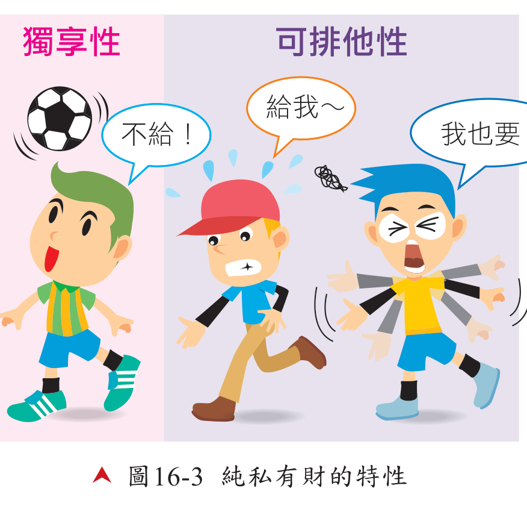
▲ 純私有財（球鞋：可排他＋獨享）
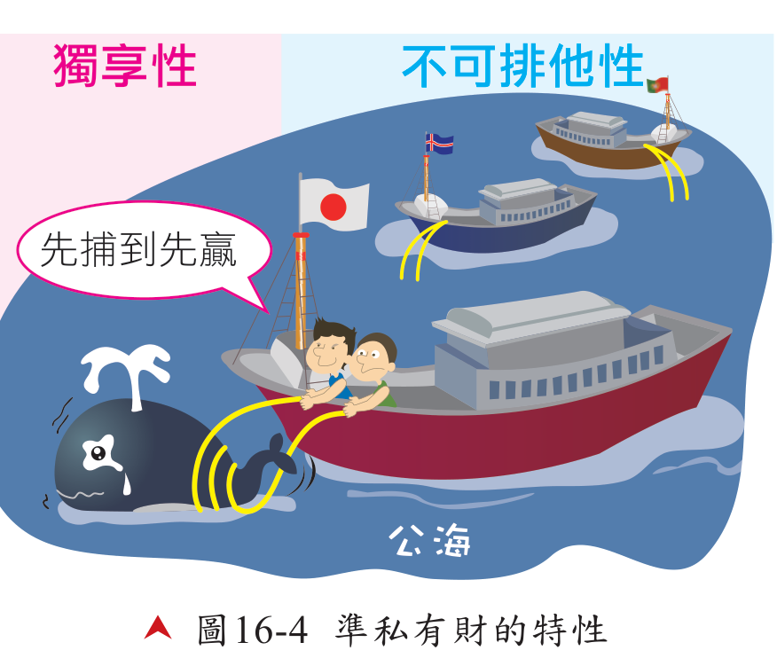
▲ 準私有財（公海魚類：不排他＋獨享）
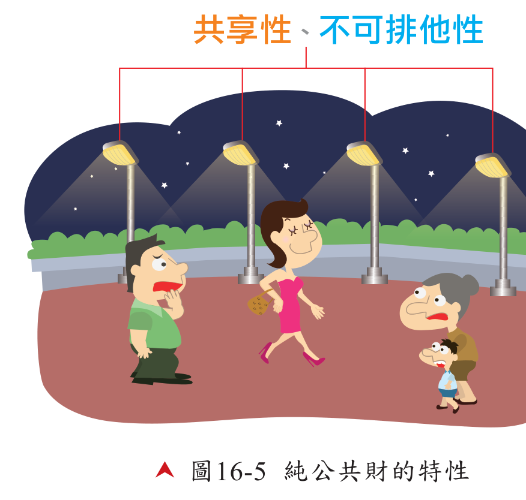
▲ 純公共財（路燈：不排他＋共享）
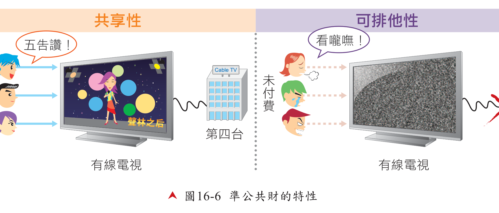
▲ 準公共財（有線電視：可排他＋共享）
二、政府如何提供公共財（決策與程序）
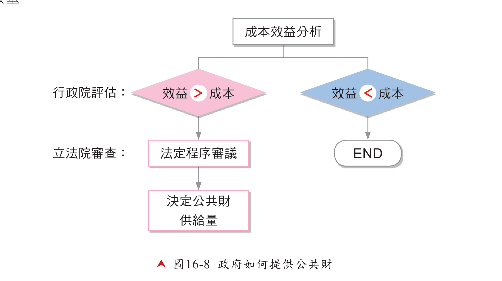
▲ 圖 16-8 成本效益分析（效益 ＞ 成本始得編列預算）➔ 行政院送立法院審議通過 ➔ 決定供給量
④ 16-4 政府財政收入與支出（科目歸類與公債陷阱）
一、政府財政收入七大來源
- 租稅收入（稅課收入，最主要來源，占 70%~80%）：
- 四大古典租稅原則（亞當斯密）：平等（負擔能力公平）、確定（時間地點數額明確）、便利（納稅手續簡便）、經濟（徵稅成本降至最低）。
- 兩大現代公平原則：
- 量能課稅原則（能力原則 / 垂直公平）：所得高者多繳稅（如綜合所得稅累進稅率）。
- 受益原則（利益原則 / 水平公平）：享受政府好處多者多付費（如隨油徵收汽燃費、商港建設費）。 - 國稅 vs 地方稅：
- 國稅：關稅、所得稅（綜所稅、營所稅）、遺產及贈與稅、貨物稅、證券交易稅、營業稅、特種貨物及勞務稅（奢侈稅）。
- 地方稅：地價稅、土地增值稅、房屋稅、契稅、使用牌照稅、印花稅、娛樂稅。 - 直接稅 vs 間接稅：
- 直接稅：納稅義務人即實質負擔人，無法轉嫁（綜合所得稅、營利事業所得稅、遺產稅、地價稅）。
- 間接稅：納稅人可將稅負轉嫁給買方消費者（營業稅、關稅、貨物稅、菸酒稅、奢侈稅）。
- 規費收入：使用者付費（申請戶籍謄本、換發護照規費、高速公路通行費）。
- 財產收入：公有財產出租之租金、出售國有土地、廢舊物料售價。
- 營業盈餘及事業收入：公營事業（中油、台電、台糖，圖 16-9）盈餘繳庫。
- 罰款及賠償收入：違規停車罰單、超速罰鍰、廠商違約賠償。
- 捐獻及贈與收入：民間或企業無償捐贈給政府的財物。
- 公債收入（債務收入）：發行國庫券或公債融通資金（屬負債性質，非實質歲入）。
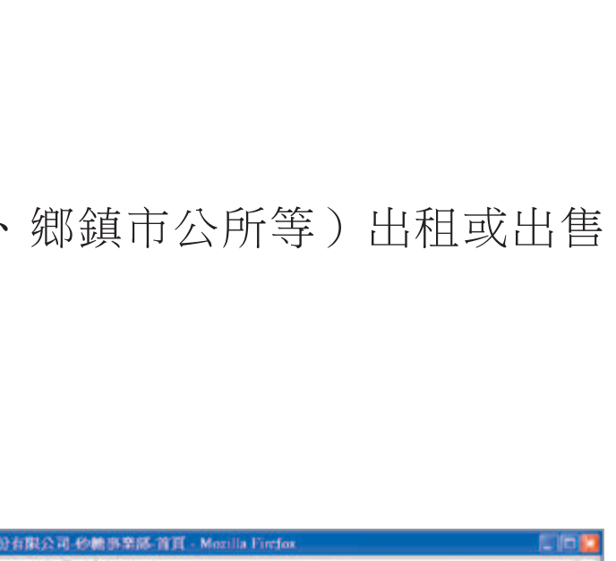
▲ 圖 16-9 台灣糖業公司（國營事業營業盈餘繳庫屬於政府事業收入）
二、政府財政支出（經常支出 vs 資本支出）
| 支出分類 | 經濟意義與主要項目 | 公債收支統測黃金考點 |
|---|---|---|
| 經常支出 | 政府維持日常公務運作之例行性支出（發放公務人員薪資、採購辦公文具消耗品、發放老人弱勢津貼、災害救濟金）。 | 支付公債「利息」➔ 屬於經常支出！ （因屬每期固定的利息維護負擔） |
| 資本支出 | 政府購置耐久性資本設備、推動重大公共建設（南迴公路圖 16-10、蘇花改公路、台中捷運、興建港灣水庫）。能提升國家長期生產力！ | 償還公債「本金」➔ 屬於資本支出！ （因屬負債本金的清償與資本帳沖銷） |
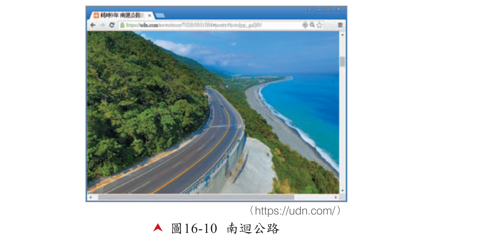
▲ 圖 16-10 南迴公路截彎取直拓寬工程（重大公共建設屬於資本支出，刺激投資擴大內需）
⑤ 16-5 政府經濟政策：財政政策與自動穩定機能
財政政策是政府透過調整政府支出（G）或稅收（T），以導引總需求回到充分就業的宏觀調控手段。
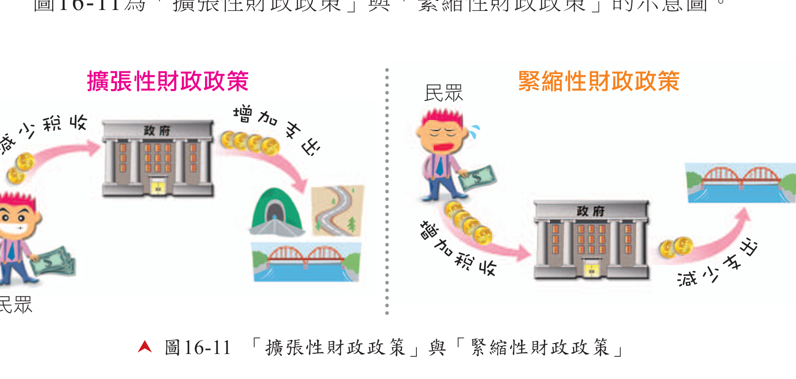
▲ 圖 16-11 景氣低迷採擴張政策（增支減稅）；景氣過熱採緊縮政策（減支增稅）
一、擴張性 vs 緊縮性財政政策對照矩陣
| 政策類型 | 景氣現況與面臨問題 | 政府具體操作手段 | 經濟效果 |
|---|---|---|---|
| 擴張性財政政策（鬆） | 景氣衰退蕭條、有效需求不足、失業率攀升、產能閒置。 | • 增加政府支出（G ↑）：擴大公共建設、發行振興券。 • 減稅（T ↓）：降低所得稅、減徵貨物稅。 |
帶動總需求 AD 擴張，透過乘數原理使國民所得 Y 倍數增加，促使失業率下降。 |
| 緊縮性財政政策（緊） | 景氣過熱膨脹、有效需求過盛、引發嚴重物價膨脹（通膨）。 | • 減少政府支出（G ↓）：縮減非必要工程、撙節公務開支。 • 加稅（T ↑）：調高租稅稅率、開徵新稅。 |
抑制民間與政府總需求，冷卻過熱景氣，平抑物價上漲壓力。 |
二、內建自動穩定機能（Built-in Automatic Stabilizers）
📌 自動穩定機能定義：
指政府財政制度本身預先內建的機制，無須經過行政部門臨時提案與立法院立法通過，即能隨經濟景氣起伏「自動」發揮反向調節總需求之功能！
• 1. 綜合所得稅累進稅率：景氣好時大眾所得增加，適用累進高稅率，繳稅自動倍增，發揮自動煞車降溫效果；景氣差所得萎縮，稅率自動跳低，減輕人民負擔。
• 2. 失業救濟金與社會福利救助：景氣衰退時失業人口暴增，政府發放救濟金與急難補貼自動暴增，直接支撐基層家庭維持消費水準；景氣繁榮時失業少，補助支出自動下降。
指政府財政制度本身預先內建的機制，無須經過行政部門臨時提案與立法院立法通過，即能隨經濟景氣起伏「自動」發揮反向調節總需求之功能！
• 1. 綜合所得稅累進稅率：景氣好時大眾所得增加，適用累進高稅率，繳稅自動倍增，發揮自動煞車降溫效果；景氣差所得萎縮，稅率自動跳低，減輕人民負擔。
• 2. 失業救濟金與社會福利救助：景氣衰退時失業人口暴增，政府發放救濟金與急難補貼自動暴增，直接支撐基層家庭維持消費水準；景氣繁榮時失業少，補助支出自動下降。
⑥ 16-6 代理問題、公共選擇理論與政治鐵三角
一、代理問題（Principal-Agent Problem）
在民主體制中，人民（委託人）投票選出政府官員與民意代表（代理人）。當雙方資訊不對稱且存在自利心時，產生兩大問題：
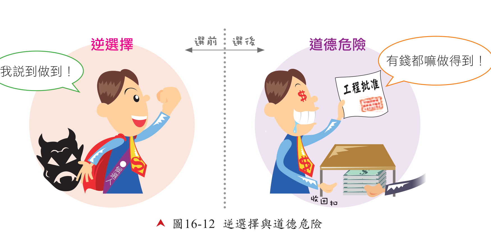
▲ 圖 16-12 選前逆選擇（候選人隱瞞缺點做出不實承諾）vs 選後道德危險（當選就任後圖利廠商收取回扣）
- 逆選擇（事前）：在契約成立或選舉投票「之前」，代理人隱瞞自身缺點（如政客濫開空頭支票），使選民做出錯誤挑選。
- 道德危險（事後）：在契約成立或就任「之後」，代理人做出違背人民利益之自利行為（如官員編列自肥預算、收受賄賂、怠惰摸魚）。
二、公共選擇理論（Public Choice Theory，圖 16-13）
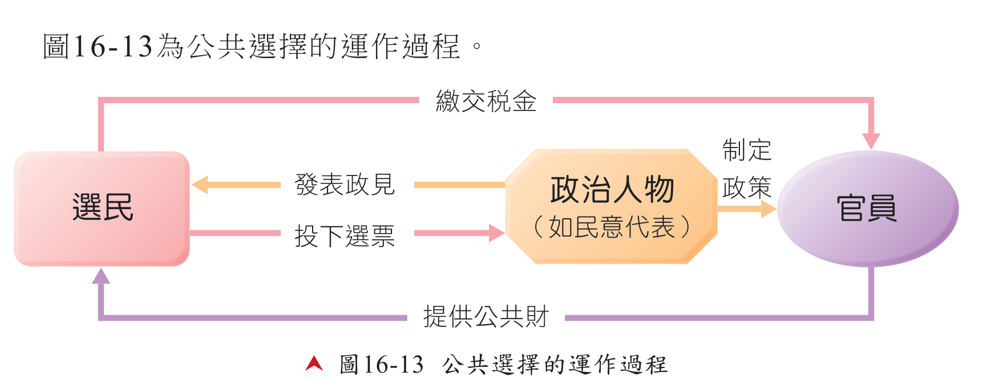
▲ 圖 16-13 公共選擇運作：選民（納稅投票）➔ 政治人物（立法審查）➔ 行政官員（執行政策提供公共財）
三、利益團體、鑽營行為與政治鐵三角（Iron Triangle）
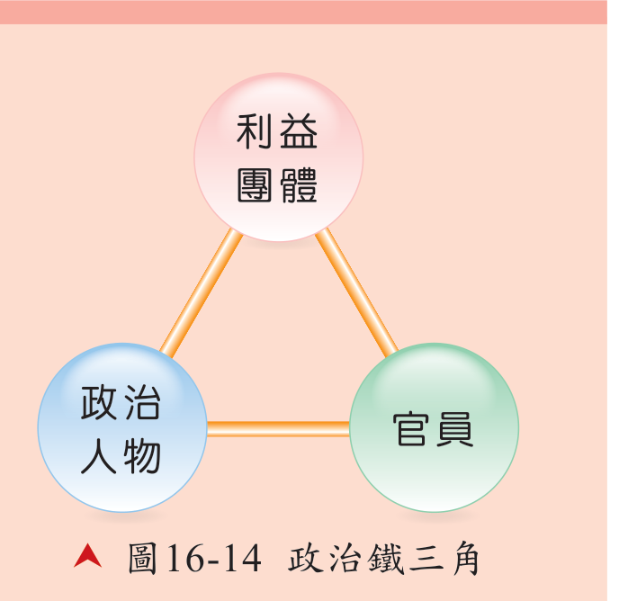
▲ 圖 16-14 政治鐵三角：政治人物（民代）、官員、利益團體三者間牢不可破的利益交換結構
📌 鑽營競租行為（Rent-Seeking）：
利益團體透過遊說、政治獻金甚至賄賂等方式影響政治人物與官員，企圖爭取對自身有利的特許權、高關稅保護或專屬補助。鑽營行為不創造實質產出，純屬資源掠奪與浪費，嚴重損害全民福祉！
利益團體透過遊說、政治獻金甚至賄賂等方式影響政治人物與官員，企圖爭取對自身有利的特許權、高關稅保護或專屬補助。鑽營行為不創造實質產出，純屬資源掠奪與浪費，嚴重損害全民福祉！
⑦ 課本原題即測即評 (8 題精選互動測驗)
嚴選課本課後習題與綜合情境題，點擊選項立即獲得即時評分、詳盡解析與統測避坑提示：
1. 對於因「自然獨占」所造成的市場失靈現象，政府通常會採取何種方式來因應？
2. 某一產品市場因為資訊不對稱，導致劣質品驅逐優質品，使得整個市場演變成「檸檬市場（Lemon Market）」，其核心成因為：
3. 依據財貨的排他性與敵對性分類，中央氣象署發布的「海嘯警報」與「防空警報」屬於下列何種財貨？
4. 「公海中的鯨魚魚類」或「公有草地牧場」屬於準私有財（共有資源），這類財貨最容易引發下列何種悲劇現象？
5. 我國國民每年 5 月申報繳納的「個人綜合所得稅」，依財政學租稅分類應屬於：
6. 關於政府公債之發行與償還，下列敘述何者完全正確？
7. 某保戶為自己投保巨額人壽保險後，故意在暴風雨天製造假墜崖車禍詐死，企圖讓家屬詐領保險理賠金，此行為屬於：
8. 在公共選擇運作中，由「民意代表（政治人物）」、「行政官員」與「利益團體」三者形成互相輸送利益、制定偏袒政策的政治共生結構，被稱為：